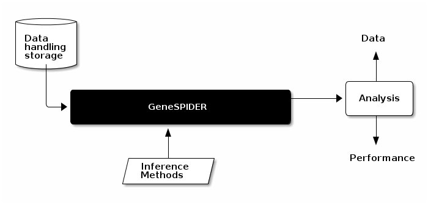

Creating
A = full(sprandn(10,10,0.25)); Net = datastruct.Network(A,'random'); Net.desc = 'a description';
or load from data base
Net = datastruct.Network.load(['/afs/pdc.kth.se/misc/pdc/volumes/sbc/prj.sbc.sparx.2/Benchmark/data/network/other/Nordling-D20100302-random-N10-L25-ID1446937.mat']) Net.desc = 'a description';
Data type
Net =
10x10 Network array with properties:
A: [10x10 double]
G: [10x10 double]
network: 'Nordling-D20100302-random-N10-L25-ID1446937'
interrampatteness: 144.69
NetworkComponents: 1
tauG: 0.085032
names: {'G1' 'G2' 'G3' 'G4' 'G5' 'G6' 'G7' 'G8' 'G9' 'G10'}
desc: 'a description'
Creating
filename = ['/afs/pdc.kth.se/misc/pdc/volumes/sbc/prj.sbc.sparx.2/Benchmark/data/dataset/N10/Nordling-ID1446937-D20130902-E15-SNR3291-IDY15968.mat'];
Data = datastruct.Dataset.load(filename);
Data type
Data =
Dataset with properties:
dataset: 'Nordling-ID1446937-D20130902-E15-SNR3291-IDY15968'
network: 'Nordling-D20100302-random-N10-L25-ID1446937'
P: [10x15 double]
F: [10x15 double]
cvP: [10x10 double]
sdP: [10x15 double]
Y: [10x15 double]
E: [10x15 double]
cvY: [10x10 double]
sdY: [10x15 double]
lambda: [0.00028399 0]
SNRY: 3.2912
SNRE: 7
SNRy: 10.331
SNRe: 10.991
SNRym: 15.479
SNRem: 10.64
etay: []
etau: []
alpha: 0.01
names: {'G01' 'G02' 'G03' 'G04' 'G05' 'G06' 'G07' 'G08' 'G09' 'G10'}
desc: ''
run inference Methods
method_name = 'tlsco'; % use method regularization_parameter = logspace(-6,1,100); % define input parameters models = Methods.(method_name)(Data,regularization_parameter); % do inference
Do comparison
M = tools.NetworkComparison(Net,models);
M =
NetworkComparison with properties:
A: [10x10 double]
abs2norm: [1x100 double]
rel2norm: [1x100 double]
maee: [1x100 double]
mree: [1x100 double]
mase: [1x100 double]
mrse: [1x100 double]
masde: [1x100 double]
mrsde: [1x100 double]
maeve: [1x100 double]
mreve: [1x100 double]
maede: [1x100 double]
mrede: [1x100 double]
afronorm: [1x100 double]
rfronorm: [1x100 double]
al1norm: [1x100 double]
rl1norm: [1x100 double]
n0larger: [1x100 double]
r0larger: [1x100 double]
ncs: [1x100 double]
sst: [1x100 double]
sst0: [1x100 double]
plc: [1x100 double]
nlinks: [1x100 double]
TP: [1x100 double]
TN: [1x100 double]
FP: [1x100 double]
FN: [1x100 double]
sen: [1x100 double]
spe: [1x100 double]
comspe: [1x100 double]
pre: [1x100 double]
TPTN: [1x100 double]
structsim: [1x100 double]
MCC: [1x100 double]
FEL: [1x100 double]
TR: [1x100 double]
TZ: [1x100 double]
FI: [1x100 double]
FR: [1x100 double]
FZ: [1x100 double]
dirsen: [1x100 double]
dirspe: [1x100 double]
dirprec: [1x100 double]
SMCC: [1x100 double]
A Gold standard network FEL Fraction of Existing Links (for RNI = FPEL) FI False Interaction FN # False Negatives FP # False Positives FR False Regulation FZ False Zero MCC Matthews correlation coefficient SMCC Signed Matthews correlation coefficient TN # True Negatives TP # True Positives TPTN Number of links that is present and absent in both networks (TP+TN) TR True Regulation TZ True Zero abs2norm Absolute induced 2-norm afronorm Absolute Frobenius norm, equivalent to 2-norm of A vectorized al1norm l1-norm of zero elements comspe Complementary specificity 1-Specificity dirprec Directed precision dirsen Directed sensitivity dirspe Directed specificity maede Max absolute eigen direction error
maee Max absolute element error maeve Max absolute eigen value error masde Max absolute singular direction error mase Max absolute singular value error mrede Max relative eigen direction error mree Max relative element error mreve Max relative eigen value error mrsde Max relative singular direction error mrse Max relative singular value error n0larger # zero elements larger than smallest nonzero element of A ncs # Correct signs nlinks # Links in estimated network plc Pearson's linear correlation coefficient pre Precision TP/(TP+FP) r0larger # zero elements larger than smallest nonzero element of A/# zero elements in A rel2norm Relative induced 2-norm rfronorm Relative Frobenius norm rl1norm Relative l1-norm of zero elements sen Sensitivity TP/(TP+FN) spe Specificity TN/(TN+FP) sst Similarity of signed topology sst0 Similarity of signed topology of nonzero elements of A structsim Structural similarity (TP+TN)/#Nodes^2
Supports intuitive operations such as min max
disp('Maximum value for each measure')
max(M)
24.347 | 99
13.009 | 25
22.692 | 75
Inf | 74
12.05 | 25
Inf | 1
24.342 | 1
1975 | 0.98667
22.692 | 1
Inf | 93
22.692 | 0.93
18513 | 0.80829
30.15 | 1
601 | 0
3.3493 | 75
0.086486 | 25
13 | 74
0.17333 | 25
75 | 0
0.75 | 1
0 | 0
-0.75129 | 0
conditional min, max
disp('Measures when MCC is maximized') max(M,'MCC')
24.338 | 20
13.009 | 19
22.692 | 74
Inf | 1
0.32557 | 6
3.6155e+14 | 0.76
24.324 | 0.98667
-1.8783 | 0.013333
22.359 | 0.95
Inf | 93
22.361 | 0.93
728.97 | 0.80829
30.14 | 0.76
5.9799 | 0
0.7154 | 74
0.018473 | 19
1 | 1
0.013333 | 6
74 | 0
0.74 | 0.98667
0 | 0
-0.99837 | -0.058026
Handling data works as expected i.e.
M2 = [M;M];
will concatenate vertically
M2 =
NetworkComparison with properties:
A: [10x10 double]
abs2norm: [2x100 double]
rel2norm: [2x100 double]
maee: [2x100 double]
mree: [2x100 double]
...
M3 = [M,M];
will concatenate horizontally
M3 =
NetworkComparison with properties:
A: [10x10 double]
abs2norm: [1x200 double]
rel2norm: [1x200 double]
maee: [1x200 double]
mree: [1x200 double]
...
To get this presentations source
git clone https://github.com/Xparx/genespider-presentation
To extract the example code from this presentation open the source file index.org in emacs
and execute the function
(org-babel-tangle)
can be done with the command
C-c C-v t